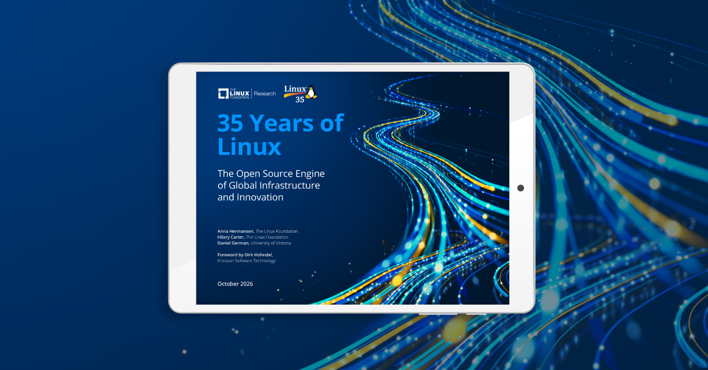
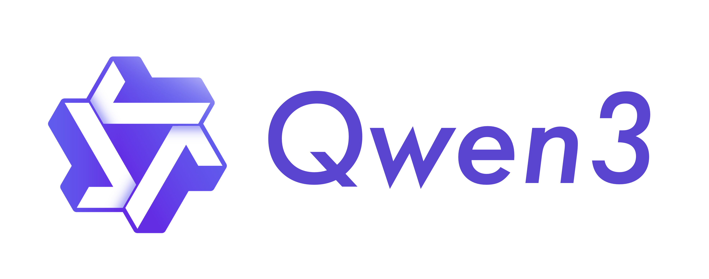
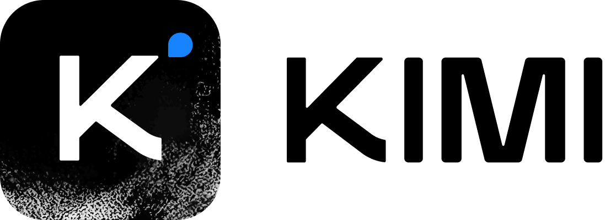
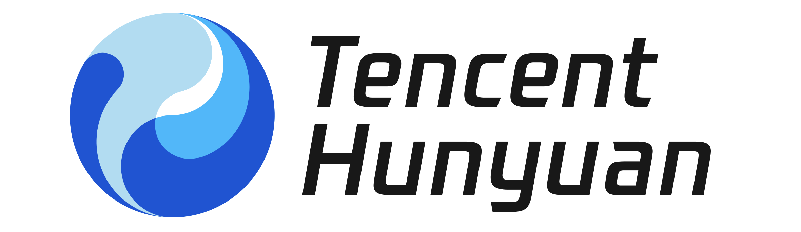

开源之力
降低门槛开放技术、知识与工具，
让学习、改进与复用成为可能。
X-LAB AI / A PUBLIC COMMITMENT
让 AI 用得起，
更用得好。
从开发者社区出发，
让开放的技术，成为更多人的机会与能力。
02 / 35 YEARS OF OPEN COLLABORATION
Linux 的三十五年，让我们看见长期协作的力量。
开发者、社区与组织持续协作，
让开放成果进入真实世界。

03 / OPEN MODELS / SHARED POSSIBILITY
从 Linux 的开放协作，到 AI 时代的开放模型生态。



以上为机构与模型系列介绍，所链接版本为代表性示例；不同版本许可分别适用，不构成实时排名或商业背书。
04 / TWO FORCES / ONE SHARED DIRECTION
技术降低进入门槛，人的实践让技术走向有意义的应用。
开放技术、知识与工具，
让学习、改进与复用成为可能。
从真实问题出发，
在学习、作品、协作与反馈中成长。
乘法表达相互促进的理念，成效由实践检验。
05 / DIGITAL PUBLIC GOODS / FROM ACCESS TO BENEFIT
数字公共品，连接开发者创造与实际受益。点击路径，查看每一步。
开放的软件 · AI 系统 · 数据 · 知识
开放许可、文档、维护和场景适配，让共享成果有机会成为真实帮助。
06 / DATA & EVALUATION / A SHARED FOUNDATION
四类工作相互配合，为判断、决策与改进提供共同依据。
看见代码、文档、维护、教学与社区协作，公开方法局限，保留质疑和纠错渠道。
四类工作相互配合，不构成机械的先后流程；不以单一分数定义人的价值。
07 / MAKE PROGRESS SUSTAINABLE
成长创造公共价值，投入支持下一轮实践。点击节点，探索每一步。
数据与评价连接两个飞轮：实践形成证据，评价支持判断。点击任一节点查看关系。
流动与高亮用于解释机制，不代表实时数据或已经实现的成效。
08 / FOUNDATIONS / FROM VISION TO PRACTICE
用公开的数据、方法与社区连接愿景，持续记录进展与局限。
为理解开发者协作、项目与社区，提供数据基础。
查看公开项目 ↗METHOD / 方法从协作网络理解贡献与影响力，结合多种证据解释价值。
了解评价方法 ↗ECOSYSTEM / 生态探索贡献、开发者能力、组织需求与资源之间的连接。
访问实践平台 ↗公开正文、图解、演示与反馈入口；让实践持续检验这份承诺。
行动记录 ↗以上为实践基础，不等同于本行动已经实现的普惠成效。OSIDX 与 BenchCouncil 等研究参考见行动记录。
09 / BUILD TOGETHER / START WITH A REAL NEED
开发者、社区与合作伙伴，共同建设可共享的成果。
分享需要与使用反馈，
贡献工具、文档与案例。
组织学习与协作，
带回采用经验和改进建议。
提供资源与应用场景，
共同开展可核验的实践。
基础参与无需既有贡献分数。具体资源与条件以每项行动的公开说明为准。
10 / THE WHOLE PICTURE
一个完整框架，连接创造、持续投入与真实受益。点击五个部分，探索它们的关系。
数字公共品 → 采用与本地化 → 真实帮助
分享需要、贡献工具与案例，或提供资源和应用场景。